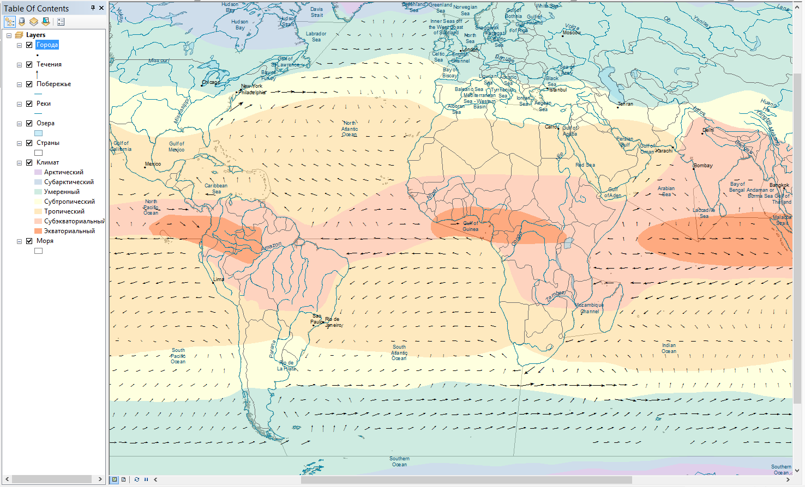

Упражнение 1 Оформление климатической карты
1.1 Введение
Цель задания — знакомство с моделями пространственных объектов и базой пространственных данных. Визуализация данных на карте. Оформление легенды и компоновки карты.
| Параметр | Значение |
|---|---|
| Теоретическая подготовка | Не требуется |
| Практическая подготовка | Модели пространственных данных, модели пространственных объектов, базы пространственных объектов, картографические проекции |
| Исходные данные | Климатические пояса по Алисову (полигональный слой), границы морей и океанов IHO (International Hydrographic Organization), направления основных течений OSCAR (Ocean Surface Current Analyses – Real time), крупнейшие мировые реки и озера, города (данные Esri). |
| Результат | Тематическая карта «Климат и основные объекты гидросферы» масштаба 1:90 000 000 |
| Ключевые слова | Модели пространственных данных, модели пространственных объектов, базы пространственных данных, классы пространственных объектов, визуализация пространственных данных, геоинформационное картографирование |
1.1.1 Контрольный лист
- Добавить на карту слои базы пространственных данных и оформить их
- Настроить подписи объектов
- Создать компоновку карты, легенду и координатную сетку
- Экспортировать результат в графический файл
1.1.2 Аннотация
Задание посвящено знакомству с созданием тематических карт на основе баз пространственных данных. Вы познакомитесь с представлением площадных, линейных, точечных объектов в базе пространственных данных. Научитесь создавать карты на их основе, оформлять легенду, сетку координат и зарамочные элементы карты.
1.2 Начало работы
В каталоге Ex01 находится база геоданных Ex01.gdb, содержащая исходные данные для выполнения задания.
База геоданных — это структурированное хранилище, внутри которого можно создавать слои данных, группировать их и связывать различными отношениями.
Внутри базы геоданных могут быть объекты следующих типов:


 — слои векторных данных (классы пространственных объектов),
— слои векторных данных (классы пространственных объектов), — слои растровых данных;
— слои растровых данных; — обычные таблицы;
— обычные таблицы;
Класс пространственных объектов (feature class) — это набор пространственных объектов одного типа геометрии (точки, линии, полигоны или объемные тела). Для класса могут быть определены атрибуты, а его представлением является таблица, содержащая как обычные столбцы (текстовые, числовые и т.д.) так и специальное поле Shape, в котором хранится информация о геометрии. Каждая строчка в таблице — это описание одного объекта.
Запустите приложение ArcMap и откройте окно Catalog, нажав кнопку
 на панели инструментов
на панели инструментовРаскройте папку D:/GIS в дереве каталогов и найдите в ней директорию Ex01 в вашем каталоге, содержащую исходные данные для выполнения первого задания. Если директории D:/GIS нет в списке, подключитесь к ней c помощью кнопки
 .
.Раскройте базу данных MapData.gdb и изучите ее содержимое, состоящее из следующих классов:
Класс Содержание Cities Города Climates Климатические зоны Coast Побережье Countries Страны Currents Данные о течениях Lakes Озера Rivers Крупнейшие реки Seas Моря К какому типу геометрии относятся данные классы?
Дважды щелкните на слое Climates и перейдите на вкладку XY Coordinate System.
Внимательно прочитайте информацию. Этот слой хранится в Географической системе координат (GCS), отнесенной к эллипсоиду WGS-1984. Это означает, что координаты каждого объекта хранятся в виде широты и долготы. В любой момент этот слой можно спроецировать в любую проекцию. При этом координаты будут представлены в метрических единицах, а система координат получит название Проецированной системы координат (PCS).
1.3 Оформление слоев
Добавьте на карту слой Countries, просто перетащив его из окна каталога.
Дважды щелкните на названии слоя Countries и перейдите на вкладку Symbology.
Внимательно изучите список способов изображения слева. Они разделены на категории Features (единый символ), Categories (качественные характеристики), Quantities (количественные характеристики), Charts (картодиаграммы), Multiple Attributes (способы изображения по нескольким атрибутам).Разверните каждую группу и щелкните на каждом способе. Сопоставьте их с традиционной классификацией способов изображения:

Выберите способ единого символа (Features > Single symbol)
Щелкните на кнопке с изображением символа и измените оформление следующим образом:
Параметр Значение Цвет заливки (Fill Color) Без заливки 
Цвет обводки (Outline Color) Серый 50% 
Толщина обводки (Outline width) 0,5 
Диалог свойств слоя:

Результат:

Измените проекцию карты на проекцию Робинсона (Robinson). Ее можно найти в группе Projected Сoordinate Systems > World. Обратите внимание на то, как изменятся очертания объектов:

Добавьте на карту слой Coast, расположите его поверх слоя Countries и измените цвет линии на Delft Blue:

Добавьте на карту слой Rivers расположите его поверх слоя Coast и измените цвет линии на Delft Blue, а толщину сделайте равной 0,5 пиксела.
Добавьте на карту слой Lakes, расположите его поверх слоя Rivers и измените его оформление следующим образом:
Параметр Значение Цвет заливки Sodalite Blue Цвет обводки Delft Blue Толщина обводки 0,5 Результат:

Сохраните карту в свою директорию Ex01.
Добавьте на карту слой Cities, расположите его поверх слоя Lakes и измените его параметры следующим образом:
Параметр Значение Символ Circle 1 Цвет Черный Размер 4 
Добавьте на карту слой Seas, расположите его внизу таблицы содержания и измените его параметры следующим образом:
Параметр Значение Цвет заливки Нет заливки Цвет обводки Серый 50% Толщина обводки 0,5 Прозрачность 50% Результат:

Добавьте на карту слой Сlimates, расположите его внизу таблицы содержания.
Откройте таблицу атрибутов слоя Сlimates, щелкнув на его названии правой кнопкой мыши и выбрав команду Open Attribute Table. Найдите в ней столбец Type, просмотрите его значения. Это поле таблицы хранит информацию о типе климата для каждой области. Вы будете использовать ее для классификации при отображении данного слоя.
Найдите поля Shape и ObjectID.
В поле ObjectID хранится уникальный идентификатор каждого объекта. Он нужен системе для того, чтобы каждый объект можно было гарантированно найти по некому однозначному критерию.
В поле Shape (вспомните, что слой полигональный) хранится список координат вершин полигона. Геометрия объектов редактируется специальными инструментами, поэтому содержимое поля Shape скрыто от пользователя.
Климатические пояса показываются на картах способом качественного фона. Для этого измените оформление слоя Climates следующим образом:
Параметр Значение Тип визуализатора Categories > Unique values Поле классификации Type Сортировка значений От арктического к экваториальному Цвета полигонов Традиционные цвета климатических поясов (выберите вручную) Обводка полигонов Нет обводки Показывать остальные значения Нет Диалог настройки символики слоя должен выглядеть следующим образом:

Добавьте на карту слой Сurrents, расположите его поверх слоя Сlimates. Этот слой содержит данные о течениях OSCAR (Ocean Surface Current Analyses – Real time), осредненные с 1993 по 2003 год.
Течения относятся к векторным полям. Существует множество способов визуализации векторных полей. В картографии распространен способ градиентного поля, при котором стрелки размещаются по регулярной сетке, их поворот соответствует направлению векторного поля в точке, а длина — скорости. Для реализации способа градиентного поля вам нужно выбрать символ (стрелку), а также указать атрибутивные поля слоя, в соответствии с которыми будет меняться их направление и длина.
Измените тип символа слоя на символьный маркер и задайте его параметры следующим образом:
Параметр Значение Шрифт Esri Geology Символ Unicode 83 Размер 28 Цвет Серый 70% 
Нажмите ОК и еще раз ОК.
Чтобы задать направление стрелки, не выходя из диалога свойств слоя на вкладке Symbology нажмите Advanced > Rotation… и настройте следующие параметры вращения:
Параметр Значение Поле Direction Направление Арифметическое Для изменения размера стрелки в зависимости от скорости течения нажмите Advanced > Size… Выберите в списке поле Length. Нажмите ОК.
Результат:

Сохраните карту.
1.4 Настройка подписей
Включите механизм размещения подписей Maplex

Дважды щелкните на слое Cities, и перейдите на вкладку Labels.
Включите подписи для слоя Cities:

Настройте параметры подписей следующим образом:
Параметр Значение Label Field Название Размер 7 Цвет Черный Разрешение конфликтов Never remove (никогда не удалять) 
Включите подписи для слоя Rivers со следующими параметрами:
Параметр Значение Label Field Title Размер 8 Цвет Delft Blue Начертание Курсивное Размещение Curved (криволинейно вдоль) Удалять дубликаты Да Включите подписи для слоя Seas со следующими параметрами:
Параметр Значение Поле Name Размер 7 Цвет Delft Blue Переименуйте все слои на русский язык следующим образом:
Исходное название Результирующее название Cities Города Climates Климат Coast Побережье Countries Страны Currents Течения Lakes Озера Rivers Реки Результат:
Сохраните карту.
1.5 Настройка компоновки
Переключитесь в вид компоновки с помощью команды меню View — Layout View.
Настройте макет страницы следующим образом:
- Размер А3
- Альбомная ориентировка
Подгоните размер фрейма данных таким образом, чтобы карта заняла площадь всего листа с небольшим запасом.
Установите масштаб равным
1:90 000 000и отцентрируйте карту в пределах листа.Результат:

Добавьте на карту легенду с помощью команды Insert > Legend, включив в нее только слои Климат и Течения:

В следующем диалоге название легенды оставьте пустым:

Далее все параметры оставьте по умолчанию.
Уберите заголовок поля для слоя Климат:


Добавьте градусную сетку координат со следующими параметрами:
Параметр Значение Шаг по X 20 Шаг по Y 20 Измените начало расстановки линий сетки для оси Y на 0.
Отключите отображение нулевых минут и секунд
Разместите над картой текст «КЛИМАТ И ОСНОВНЫЕ ОБЪЕКТЫ ГИДРОСФЕРЫ».
Разместите под картой по центру численный масштаб
1:90 000 000.Разместите в правом нижнем углу карты текст «Выполнил» и свое ФИО.
Результат:

Сохраните карту.
1.6 Экспорт в графический файл
Экспортируйте карту из режима компоновки в формат
PNGс разрешением 300 точек на дюйм с помощью команды File > Export Map. Сохраните его в свою директорию.Вставьте карту в отчетный файл
1.7 Ответы на вопросы
Ответьте на вопросы в отчетном файле. После окончания положите ваш отчет в сетевую папку для проверки вашим преподавателем